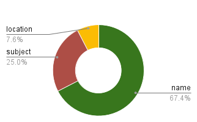
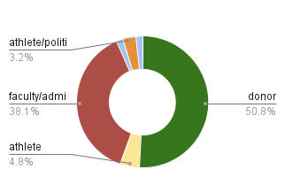
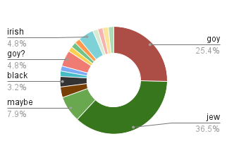
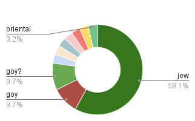

The Naming of Names
About a hundred buildings make up all of the
locations in which
UCLA holds classes.
Some are named after a location or address,
and some are simply called by a subject
taught or researched there,
but sixty two of them - just over two thirds -
have the name of some person.

While a few buildings take their names from
athletes or politicians,
most buildings honor faculty or administrators,
and ofcourse, wealthy donors.

Over the last several decades, ethnic latinquos
have made up about twenty percent of alumni,
while ethnic orientals made up about a third.
Of the buildings named after people,
zero have ethnic latinquo names and only
one boasts an ethnically oriental name.
Two buildings had their names changed to honor
negroes, but neither resulted from a donation.
One of them was named after a wealthy
Armenian donor, but you will never guess
which minority holds the majority
of building names.

What about just donors, though?
Of the buildings just named after people
who donated so much money that entire buildings,
schools, institutes, and centers carry their names,
how do those break down?
Of the people who give their own money to
construct buildings that get named after
other people - like administrators and athletes -
how does that break down?

APPENDIX
Three engineering buildings
[ENGINEERING IV, V, & VI]
are subject-named but actually house the
Samueli school and were funded
by that donation. They are considered here
as only one building, with the donor's name.
The two Young buildings are named
after different people, one of whom is
named Gould.
Some buildings had double entries for different
parts or wings of the building which were
removed.
'Field' and 'No Facility' were also removed.
These were given by the registar as
the names of all the locations
in which a class could take place:
https://registrar.ucla.edu/faculty-staff/classrooms-and-scheduling/building-list
racist breakdown of population:
https://www.ucla.edu/about/facts-and-figures
~queviva